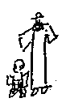
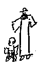

○パオリのこと
○父と娘との散策
○武藤のこと
○貴婦人御あいての若い女
○夢（二）
○隣の職工の会話
○夜の大雨の心持。
○小野、山岡、島野、（
○十月一日（十四夜月）
○日々草（十月）
×柳やの女中のこと。巡査、おかみ、円覚寺の寺男。
○肝癪のいろいろ
 十月の百花園
十月の百花園○部屋をかりに行った中野近くの医者、
パオリ
オランダ人。伊太利らしいパオリという名をつけて。よせ芸人
一、神田辺の日本下宿
一、彼の部屋の雑然さ
一、下宿の女中、片ことの日本語 英語の会話、女中たちのエクサイトメント
一、パオリの幸福
父娘の散策
人のよい気の小さい若い好奇心のある父、（田舎からでもよい）
娘、タイピストか何か、始めて自分の小
娘、あの職業婦人タイプ
武藤のこと
彼女の体
眼つき
押しのつよさ
独占慾
子供や同輩を皆手下あつかいにする。淋しさから来るそういう癖。
老貴婦人のお相手の若い女の哀れさ
○老婦人の趣味で着物をきる。
○絶間ない我ままと小言
（悪意のない、然し勝手な、例、）
「さあ、一寸これをよんでおくれ、まあ何て下らないんだろう、すぐピーターに御礼を云ってかえして下さい、――おや、お前さん、まだ着かえがすまないの、仕様のない人だこと、いつでも私はまたされる うんざりですよ my dear.」
「今日のお天気はどう？」
「よろしゅうございます」
「そうじゃあないだろう、風が出たらしいじゃあないか、窓をあけて御覧 ホラ、もう出かけるのはおやめですよ、大層おめかしが出来たね」
In society, she played the most pitiable role. Everybody knew her, and nobody paid her any attention.
She was very self-conscious, and she looked about her with impatience for a deliverer to come to her rescue.
或夢（父上の見た）
崖の上を歩いて居た。下は海だ。ふと見ると、牛が二匹泳いで来る。一匹は真直に来るが、もう一匹の方はつかれたと見えて、三角州のようになって居る彼方にそれてゆく。こんどは人間が流れて来た、三人で皆長髪だ。ああいやだなと人を呼びにゆくところで、目がさめた。
その三人が長髪であったので、さめたあとまでいやな心持がして仕様がないから、電報を打とうかと思ったよ、そしてこんな馬鹿な想像をしたのさ、スエ子が居るから、若し海岸でも散歩しようときかないで出て、何かあやまちでもあったかと思ってね。
母「だってすえ子はもう土曜にかえしてあったじゃあありませんか」
「ハハハハ本当にそうだったな」
私「一寸お忘れになったのね、そのとき」
「ふーうむ」
これは母コウヅに女中ととまり かえって、その日帝劇で父と会ったとき、父上の話されたこと。
夢
デンマークだ。氷原の上を、タンクのようなものや何かが通る、停車場のようなところに自分、多勢の白衣の少女と居る。自分、英語で、劬りながら話した。
How old are you?
など。少女一寸英語で返事するがうまく云えず困って居る。
隣の職工の会話
「おはぎとぼたもちと違うんですか？」
「違いますよ、ただところによって名が違うと云うけれどそうじゃあありませんよ、ぼたもちは半殺しさ」
「へえ？ 半殺しって？」
「もち米を飯にたいて、それを、あたり棒か何かでつぶすのさ」
「臼でぶったたくんだね」
「あらいやだ臼だって。杵でしょう？」
「――杵でさ」
「おはぎはじゃあどういうんです」
「おはぎは、飯のまま握ってきなこやなんかでまぶしたのをおはぎというんさ」
「そうかね、やっぱりもち米でしょう？」
「みな殺しってえのは」
「餅さね」
「ハハハハ」
女の声
「ねえーさん、労働組合ってあるんだってね、それに入ると、毎月二十銭ずつだか会費をおさめるんですってね」
「はあ」
「そいで何だってえじゃあないの、どっかの工場でストライキでもすると、皆でお金を出し合ってすけてやるんだってね」
「へえ」
「いくらでも出さなくちゃあならないんじゃあ困っちゃうね」
「ええ」
夜の大雨の心持
一九二五年九月二十九日より三十日まる一日降りつづいた大雨についての経験。
大抵一昼夜経てば天候は変るのに、その雨は三十日になってもやまず、一日同じひどさ、同じ沛然さで、天から降り落ちた。雨の音がひどいので、自分の入って居る家以外皆家も人も存在を消されたように感じた。床についてから、洗い流すような水の音、二階の下は、そのザーザーいう水が走って流れて居そうな気がした。
〔欄外に〕五十年来という大雨
○小野 酒をのむ、色白、一寸腰のかがめかたなどくにゃりとし「おやかましゅう」という。
○山岡 皮膚のうすい黒い肥り、髪濃く、まつ毛も黒く濃い。動物、舌たるいような口のききよう。発句、釣、低利資金で米松の家を作ろうという。しきりに建築について研究し、
「あの柱の破れなんか、震災の影響です」又
「あの中廊下が地震のとき役に立ったですな、つっぱりますからね」等。
「あの中廊下が地震のとき役に立ったですな、つっぱりますからね」等。
島野 古の物語、絵巻にありそうに貧相でプルルルとしたしなび鼻、うすい髭、うすい卑屈な唇、「――でございます」という。
○竹の島人 大きな酒やけのした鼻、光った、鋭く動そうとする眼。古い記者生活時代のくせで、人を呼びすてに話し、野田大塊、釈宗演のおたいこ。
十四夜月
二階のてすりに顎をもたせかけて、月を眺める。雲が出て段々月に迫り薄雲が輝く月面をかすめ、むらむら迫り、月は、雲にかくれては現れ、現れてはかくれる。ごく子供のとき、台所のよこの高窓に顎をもたせ、そうやって、やっぱりこのように雲に浮ぶ月を眺めたことを思い出した。雲が動くのではない。月が――円い銀色の月が同じ速さでスーっと雲の裂け目や真黒ななかや、もっと薄い、月が白くほの見えるところなどを遊行して居るように思う。自分も一緒にすーすーと。下へすーすーゆくようなのに決して地面近くはならない。やっぱり高い高い空にある。変な、ぼんやりした悲しいような心持。いくつ位だったろう、八つか九つか？
日々草
日々草から、キハツ性のゼラニウムの葉から立つと同じような香いがした。根を熱湯につけてさすと一日一日、新しい花がさくと云ったが咲かず、二日目に、葉ばかりになった。
柳やの女中
薄馬鹿で色情狂、
甚兵衛の家に肴をとどけて来て、かえりになかなか柳やへ戻らず。女房丁度雨がふり出したので傘をもって迎いに来る。行き違いになったのだろうと云ってかえる。その間に女は、線路のどこかで、人足に――土方に会い、お嫁に来ないか、女房にならないかと云われ、そのまま一緒に夕暮二三時間すごす。すぐどうかなったのなり。
この女、人を見れば、お嫁にゆきたい、世話をしてくれないかという。
翌日、あの土方と約束したから、と云って行く。土方居ず。それから又数日後土方と会い暫く一緒に暮す、土方転々として去ったので、又柳やに戻る。
そして、或朝しらしらあけに、隣の男のところへ夜這いし、かえるところを巡査に見とがめられ詰問され、姙娠五ヵ月のことから、その子はだれの子かわからないことから、鎌倉で巡査と関係して居たことまですっかり話す。
巡査は、敏腕と云われる、二十七八歳の生若い、ものを知らない、巡査を天下一の仕事と心得て居る奴、風紀上など些か微力をつくしたい、と云いたいのでしつこくきく。女房困り、前から気が有った円覚寺の寺男と一緒にさせることに急にし、その男をよぶ。眼玉の飛びぬけたような、口をあいた馬鹿。形式の見合いをさせ、おなかのことも承知でいよいよよいとなる。男曰く
「じゃあこれから毎晩来るが、あなた、と呼ぶんだぞ」
馬鹿女うれしそうに
「はい」
○肝癪のいろいろ
或中尉、ひどいカンシャクモチ
何かをカンにさえ、いきなり庭にお膳を放り出し、膳がひょいと立つと、それがシャクで、わざわざ出て下りて、ふみつけこわす。
又
同じ人
ひすけた風呂桶にどうしても、水をはれと云う、だめです、いやどうしても一杯にしろ、と駄々をこねる。
きりょうのぞみでもらわれた十七歳の妻、それがたまらず逃げかえる。
実家近くで、近所の子を抱いて居ると、馬にのって来かかった元の夫――中尉、ふいと馬を下り、抱いて居る子をあやした。愛し（妻を）未練があったのだ。然しその十七の女、その男の顔も見ず。
或人は
○カンシャクを起すと、子供のように戸障子をゆする。
十月の百花園で見たもの
清浦の馬面、ノビリティーナシ 写真
│ 黄蜀葵を一輪とって手に持つ。
秋草。清浦ととりまきの陣笠
婆芸者「百花園さんもさぞよろこんで居りますでしょうよ」
向島の芸者
○ちりめん（こもん）に黒い帯をしめ、かりた庭下駄の、肉感的極る浅草辺の女優と男二人の組。
○カマクラの海浜ホテルで見た、シャンパンをぬいた I love you が、又あの水浅黄格子木綿服の女と、他に子供づれの夫人とで来て居た。
○下手な絵を描いて（雁来紅の緑と黄との写生）居た女、二十七八、メリンスの帯、鼻ぬけのような声
○可愛いセルの着物、エプロン、黄色いちりめんの兵児帯の五つばかりの娘、年とった父親がつれて来て、茶店にやすみ、ゆっくりしてゆく。かえりに、白鬚のところで見ると、この小娘の姿はなく、父親（六十近い）だけ、自動車を待って居る。妾の子をつれて一寸散歩して、おき、一人かえる姿、一寸情なかった。
〔欄外に〕
尾花、紫苑。日が沈んで夕方暗くなる一時前の優婉さ、うき立つ秋草の色。
尾花、紫苑。日が沈んで夕方暗くなる一時前の優婉さ、うき立つ秋草の色。
工場の女と犬
十月雨の日
女工
「マル マル マルや 来い来い お前を入れて置きたいのは山々だけれどもね、土屋さんに叱られるといけないから出てお呉れ、ね、マルや マル」
別の声「何云ってるの」
「――マルと話して居るのよ、ねマルや、（誰かがきいて居ることをイシキした声で）お前を入れておきたいのは山々なれどもね、さマルや、大儀かえ？ 大儀なら小屋へ行っておね」
聞いて居る自分、うるさくなりむっとした心持になる。
アンマの木村
六十九歳、
若いうち、いろんな渡世をし、経師や、料理番、養蚕の教師、アンマ、など。
冬、赤いメンネルのしゃつをき、自分でぬいものをもする。
「あんたどの位あります」などときく。小柄、白毛。総入れバを時々ガタガタ云わせる。
小さい鼻、目、女のようなところあり、さっぱりせず。
後藤新平の自治に関する講演
ひどく生物哲学を基礎とする自治本能という。
「私が云う自治というのは、決してむずかしいことではない、
講釈師大谷内越山の訛
金色夜叉
「
小酒井博士 ひどい肺病
妻君
かげで女中をしかりつけ、夫のところへ来ると、まるでわざとらしい微笑をはなさず。
夫 下手、
手伝の若い女の自惚
夢（Ｙの）
父が子供につき落されて、川（庭に引き入れた）に落つ。――勝太郎が庭木戸から入って来たら、他の子供たちがついて来たので、
「そんなところから来ちゃいけない」
と云うと、中の一人がついたらしい。
Ｙ、あわてて、助けだしたら、まがうかたなきブリの切身になって居る。人工呼吸は、どうやるのだか分らないが、多分よく揉めばよいのだろうと、両手でもむ。
「しかし、切身じゃあ人工呼吸もきかないかもしれないな」
切身にだんだん弾力がついて来る。いつか元の父になり
「人工呼吸は利いてきたが、とても生きられない、もう死ぬ」
Ｙ、大きな声で
「遺言！ 遺言！」
「今度買った地面は皆で二十七円だ。阿母さんのものにするつもりだ、あとは皆書つけにしてあるから」
Ｙ、母の土地が、そんなにやすくては憤るだろうと思う。やがて父死ぬ。お父さーんお父さーんと泣く。
自分の夢
坂をのぼった西洋風の上り口（コウヅか）多勢の一隊、自分、母、他の小さい人など、夜、くらくて足元のわからない、向うから汽車の来るのもよくわからないようなところを（停車場の構内）を横切って家にかえる。あとから来る筈のＫ、父上その他不明なかなか来ず。心配して待って居る。誰か轢かれたのではあるまいかと。
果して、一人の男来。自分、母入口に立って居、はっと思い、母にきかせず、私に云え何かあったのかときく。男合点をする。囁きで
「誰、しかれた？」
「Ｋさん」
「！」
自分体ギンとなる程の愕きと悲しみを感じた。
「助る？」
「こなごなです！」
Ｋについて、これまで見たのもアクシデンシャルな死であった。いやな心持なり。
もう一つ
どこだか判らず。何だか分らず
Ａが、私にボムをなげつける、それが、黄色と赤の平たく丸い、菊の花のようなの。両手にもって電柱のところに居る。
ああぶつけられると思うがにげられず、なげたの、うまく体にはあたらず、破裂した一部が左の足にあたる。四週間かかる。二週間目頃ひどく膨れていたむと。いう。
〔欄外に〕
Ａの、憎んだようなこわい顔、ありあり見えた。
Ａの、憎んだようなこわい顔、ありあり見えた。
工場の話
「柳は陰気くさいが、あれで陽のものだってね。昔何とかいう名高い絵かきが、幽霊の絵をかき明盲にしたりいろいろやって見たが一向凄くならない。そこで考えたにゃ、ものは何でも陰陽のつり合が大切だ。幽霊は陰のものだから陽のものを一つとり合わせて見ようてんで柳を描いたら、うまいこと行ったんだって。――男と女だって、生きてるときは男が陽で女が陰だが死ぬと変りますね、土左衛門ね、ほら、きっと男が下向きで女が上向きだろう。ありゃ何も男のキンタマが重くて下を向き、女のおしりが重くて上を向くんじゃあないさ、陽陰が代ってああなるんだとさ。
おじぎなんか、何故陰の形をするんだろう、そいつはわからない」
伊豆湯ヶ島
一九二五年十二月二十七日より
修善寺駅
茶屋の女（丸髷）出たら目の名、荷物のうばい合い、
犬、片目つぶれて創面になって居た、思わず自分、あっと云う。
Ｙ、「この犬はいけない！」体が白いからなおいけず。自分、片手で顔を覆い動けず。創にさわるかと思うと手も出ず、又哀れで。
その犬の心持を思いやる、きっと人がこの頃自分をきらうことを悲しく、いぶかしく感じるであろうと。
二十八日、ひどく暖い。そとに出て見る、表山、山、杉木立、明るい錆金色の枯草山、そこに小さい紅い葉をつけたはじの木、裏山でいつも日の当らないところは、杉木立の下に一杯苔（杉ごけやぜにごけ）がついて居、蘭科植物や羊歯が青々といつも少しぬれて繁茂して居る。
山が多く、日光が当るあたらない、いろいろあるので、山にも変化がある。瑞巖寺で見た本阿彌の庭のように、一面芝山で何もなくところどころに、面白い巖の出たのもあり。
○南画的な勁い樹木（古い椎）多し、古
 、榧、杉（松は尠し）◎南天、要、葉の幅の広い方の槇、サンゴ樹（赤い実がついて居て美し）それから年が経て樹の幹にある趣の出来てた やぶこうじの背高いの（千両）南天特に美し。
、榧、杉（松は尠し）◎南天、要、葉の幅の広い方の槇、サンゴ樹（赤い実がついて居て美し）それから年が経て樹の幹にある趣の出来てた やぶこうじの背高いの（千両）南天特に美し。○川ふちの東屋、落ちて居た椎の実、
「椎の実 かやの実たべたので」
かやの実とはどんなものだろう
○変な五人づれの万歳
○男の尺八、それをききに来たもう一人のやはり気弱な男。
Yamada Kuniko の生活
信州人。ムラサキ時代、
中央新聞記者。
いろいろな男
生田と同居時代
同じ社の政治部の少し上の男と結婚、
その男代議士となる
女に対する淡白さ、彼女は良人を父とし、多勢若い男にとりかこまれ、良人子供をつれて客間を出、遊ばせにゆく。そういうもの分りのよさ。しかし我とわが身をせめる寂しさ。（此頃よくある一種の細君）
生田花世氏の言葉
「余り不幸だと一種の公明正大さが出来ますな、自分の利益にはならないでもね」
野上さんの或面
「情の人には嫌われても、知の人には尊敬される人ですね。面白い存在だと思います」――伊藤綾子の言葉。
伊藤綾子
二十五歳――今年六歳
独身、男性、恋愛の欠乏から生じる不安、生活のよりどころなさ。
菊池寛
「いくつです」
「二十五です」
「へえー、いつの間にそんなに年をとりました――神代種亮が妻君をなくし、子供は三人あるが――どうです、その人と結婚する気になりませんか」
「余りだ」と思う
芥川
「女は結婚して損はないんだがなあ」
生田 自分
「めぐり合わせで来るときは来る。間違ったことをするより待った方がよい」
綾子 それは分って居る。が、寂しい。弟が幼いのに、
淋しさの鋭い刀できられる心。
中年での疲労
若くて田舎から出、金になる原稿、名をなす為の原稿と三日四日徹夜しても平気で仕事をした女、二十七八になり、やっとこれからが楽しみというときにつかれが出、頭や手がしびれ仕事どころでない。「それは辛いわ、とても悲しいわね」「だから、余り無理をする人を見ると、私おやめなさいって云うの」
小田切益之助の娘
二十三、聖心女学院出、
頭のよい、派手ずき。
お茶のテーブルに花をまき、クリームを銀器で出すという風。
長尾半兵衛の息、ケイオーに七八年居、いつ卒業するかあてのない男と婚約。――自分が引まわせる気のよい男という条件で。長尾の地所が二十万円でうれたら結婚する。それまで娘早稲田に聴講生として通う。
○○された少年
美貌、十六
入院、身体不動
看護婦さわぐ。うるさく。なめる。すいつく。
一人、自分から勝手にひどいことをする。そこへ別のが入って来、黙って見て居たが、泣き出す。すっかり泣いてからだまって出てゆく。夜中又その（元の）女が来、二三度勝手をする。
発熱。
それから、まるで女がいやでたまらず。
今二十七八、やっと女がすきになれて来たという、その心持。
雪の札幌
樹木についた雪、すぐ頭の上まで、積雪で高まった道路の為来るアカシアの裸の、小さいとげのある枝。家々の煙突。
犬の引く小さい運搬用橇
石炭をつんでゆく馬橇
女のカクマキ姿
空、晴れてもあの六七月頃の美しさなく、煙突から出る煤で曇って居る。
雪をかきわけて狭くつけた道にぞろぞろ歩く人出。
冬ごもり
○自由でない水
○石炭のすすで足袋などすぐ黒くなる部屋
○雪がつもり、窓をふさいだ家の裏側
○まるで花のない部屋
老ミセス、バチェラー
○大きい猫目石のブローチ
○網レースに、赤くエナメルした小さい小鳥のブローチや花などをところどころにつけたビクトリア時代の
○老猫のような髭
○蒼っぽい目
○指環のくいこんだ、皺のある太い節の高い指
○エプロン
○いつも編物
水色と藤紫の調和というこのみ。
“I am quite all right, so far I keep still.”
○八十一
ミス、バチェラー
○五十前後。
○やせた、鼻と顎がコーモリのように見える婦人、
○赤っぽい、波のない毛をかまわない結びようにして居る。毛糸あみの灰色の着物
○決して笑わず、形式的に一寸口をあける。
○永い会話を力のある声でせず、鼻声で不明瞭に一寸
「そう、私も出かけましょう」などという位。
不幸な old maid の典型。
八重の心持
○この人が来たので八重、家のことをちっとも仕ないでよいようになった。が、其は勿論よろこびではない。老人達が自分をたよりにしてくれないことの淋しさ。しかしいざとなれば、やっぱり彼等の世話をするのは、自分だという自信。
○健康になったので宗教の理解も明るくなり、決して人生を楽しむまいとするのが神の教ではない、と考えて来るようになった。八九年前とは大した変化。
○ウタリー（同胞）中学校をたてたいと基金を集めて居る。
「これまではよそからしてくれな
「この間ミス、コースという方がいらっしゃいましてね、貴女が彼等のためにいろいろ努力なすっても無駄でしょうと仰云いましたの。だから私ね、私は無駄でもやらずには居られないというと其ならおやりなさるもよいが、効はありますまいとはっきり云いなさるんで
「私自分が斯うやって居るだけだって何にか役に立つと思うよ、斯うして居るからこそ現状が保てて居るのだとも思う」
ミス、何とかいうアメリカのドクトル血液検査に来た由、八重案内しろと云わる。其那こといやだというのを、バチェラーは、道庁や佐藤博士の御厄介になって居るからことわれず、八重電報で呼ばれ、かえって入るともうその人が来て居る。
目的や何か伺わないうちはいや
通弁だけはするが人が出て来るかどうか判らない。
然し行くと、日雇一円五十銭ずつ出されるので、ひどいのがうんと来る。
ミス某きたながり
「世界中で一番弱い民族だ」と云う。八重
「貴女、私たちの人の愧しいところを御覧になったのだから、必要以外のことは黙って居て下さいね」
「No, I can't 漠大な費用を出して貰って来て居るのだから、私の見たところ、皆云わずには居られません」
「本当に愧しい恥をさらしに行ったのですよ」
八重、バザーの為に、一年一生懸命にいろいろの沢山の縫をして、徳川などの手でバザーをする。その時イブリ アイヌが上京
「私のお友達がね、わざと、『あすこに居るのがアイヌですか』ときいたら
『ええあれが北海道で、木の根や草の根を掘ってたべて居るアイヌという気の毒な人たちです』と云ったんですって。だから、私行かないでよかったよ」
バチェラーの仕事が充分でなく名に実がそわないのを八重は、親身で遺憾に思って居る。
〔欄外に〕
八重のものの考え方
一、アイヌの女！ とさげすまれまい努力
一、高貴な人というものに対する原始的な崇敬
一、熱情的愛ウタリー
八重のものの考え方
一、アイヌの女！ とさげすまれまい努力
一、高貴な人というものに対する原始的な崇敬
一、熱情的愛ウタリー
○八重の経歴
一、八重の父 七つ位で死ぬ
一、母の姉のところに養女にやられたが、和人の夫とけんかをして出て来る。
一、家をたてたい一心、
一、十六七の時、母を説いて学問――に努める。
一、バチェラーに貰わる。
一、馬から落ちたところが打身内攻し足が引つれ、苦しむ。
一、六年間床についたきり。
一、恢復して伝道、
〔欄外に〕Leading passion for Utari.
周囲の人
母 好人物 ドメスティック
弟 山雄
富次郎
バチェラー一族
姉 浪花節語り
Ｋ、Ｓの性格
○小さい時から花柳界に育ち男をだますのを手柄と思って居た、
○或若者、年上の女に愛され、激しい性的遊戯を行う、その女の代りに彼女選ばれ、ひけをとるのがいやさに承知す。然しお話にならず、ことわる。女中にどう変って居るか判らない位置を見られるのがいやで、白むまで起きて居る。
○もっと小さいうち、始めて△のとき、茶屋の女将
「何度おしやはった？」
「三十六度」
「あほ云わんとき！ 三十六度！ そんなことがあるかいな」
「だっておかはん、あて勘定してたもん」
哀れ。考え違い。
舞姫などこのように、情慾も、好奇心もないのに、そういう目に会う。
のち、男にひかされ、ひどい生活を五年する――男、口入の一寸よいの。いつも、百や二百の金は財布にある、但人の金、女そんなこととは知らずにかかる。ちゃんと退引せず、男のところへ逃げ、少しずつ金を入れるというやり方。
〔欄外に〕
○大して腕もなし。
○大して腕もなし。
そのうちＹが知る。
Ｙのところには金の都合のつくことがあるので、それも心だよりで逃げて来る。
Ｙ 医者にかよわせ、歌沢をならわす。よい天分、然し芸で立つ気はない。男、弟子の一人ですいて居るらしいのを知りもちかけ、金を出させようとす。
男、心のことと思う。ソゴし、駄目。（宇治の花屋敷。男、女と山の中に入ってもよいという。女それを望むに非ず。悪たれて本音をはいてしまう）
友達であった女、神戸に鳥屋をして居、それを、男のために売りたい。相談して岡田をひっかけ買わす。失敗
又東京に来る。やけ。
わるい男（根津の中西）
Ｙのところに居るのに「何も其那とこに居いでもええやろ、若いのに」などそそのかした男。
〔欄外に〕
○平気で男の悪口を云う 世話になって居る。
○いつも方便の恋
○その癖心のよい人と思ってつかみそこなう。
○岡田、本妻を出す。男の子一人不良 あとにせい入る。
○平気で男の悪口を云う 世話になって居る。
○いつも方便の恋
○その癖心のよい人と思ってつかみそこなう。
○岡田、本妻を出す。男の子一人不良 あとにせい入る。
×生存難
Ｔ
母、違う。
やさしくして表に出して叱らず
「本当に困るんですの」
と人に云う。
そういうことによって spoil され、活気のない、目的のない生存
二十三
結婚する適当な相手もなく。
Ｙ、Ｙ
賢い頭、見識
根気なさ ディレッタンティズム
Ｉ、Ａ
小さい才能、打算
結婚難
恋愛の経験者
性慾の自覚と、
家庭生活に対する或考
○男は結婚迄自由で種々な生活を経験し、結婚と同時に落付こうとする。女はこれから生活をするという期待をもつ。
○男は外で仕事、うちで休、その波がある。
女にとって、家は、仕事、休みを用意するのだって仕事
○所有するものの愛が男にある。女には？
ビュビュ・ドゥ・モンパルナッスより
――売笑婦になじみもあったがね、彼女等が愉快そうにして居るのは、それ、子供が怖ろしさをかくすために喚き散らすだろう、あれと同じなのだよ。
男の荒い掌
男の荒い掌が彼女をなでる前、彼女はまだどこか野生で、きめもあらい。生毛もある。一度男の荒い掌が
女にする男
その紙やすりである男の荒い掌になでられすぎた女を御覧、
こすりすぎた象牙の表面同様につやがぬけ、筋立ち、かさかさして居る。
波多野秋をにくむ女の心理
自分も女、あれも女、
あれが男をひきつける
自分、やく。
やいたと云っては口惜しいから、道徳的にどうこういう。
顔で行かず、心で行こうという見えざるコケット
○「男は、女を愛す、と平気で云う。女だって同じと思うわ、それを何故私は男の人がすきよと云えないの、云っちゃあいけないのでしょう。」
〔欄外に〕母となる性の特質、男にある浄きものへの憧れ、女に娼婦型母型
二つあるように云うが、男の人の要求が大体その二つに別けられるので、女の方は、それと順応して、一方ずつの特性を強調するのではないの。男は一人で二つ持つ。この傾向をね。
女は二つ持って居ても、一方をどちらか殺す――教養だの、必要だの――対手の男に応ずる本能からだの。
彼女（私）
はこういう女だ。
感じが敏く、又気が弱いところもあって、会う人、つき合う人にじき影響される。（一時ほんの一時。）ああ思い、こう考え、いろいろの憧れをもつ、しかし最後にはその中から、自分に本当にしっくりしたものを選び出し、選んだと信じたら、其をやり通す強情さをもって居る。
原あさを
仙台かどこかの豪家の娘
母一人、娘一人
歌をよむ。
ひどく小さい、掌にでものりそうな女
男なしに生きられぬ女
さみしさから、下らない男のところへでも写真などやる。よい人は――男は――その小ささ脆そうさなどで情慾をけされる。つよい――心も、或は慾情も――男が彼女を捕まえる。なかなか幸福にはなれず――朗々とした。石原とのいきさつも叙情的幸福。
×夏目漱石の墓
アドバンテージ
妻君
門下
故先生
一寸した小会社の娘
変りものを以て任ず。
東洋大学で同級であった男と同棲、子供、震災、京都の日活の用で、男京都に居るうち、友達にだまされて無一文、やどで、ひどいあつかい。
製畳機を作る店の月報を出すことを、宿やの主人とその家の主とできめ、月給二人の細君連で相談して四十五円、五十五円として十円はやどに入れる。
そのやどやを急に出され、月報の店や何かうろつき夜一時すぎ、不明の七条の一軒の家を四組でかりて居る家に住む。それから東京。
〔欄外に〕
不良少女的一寸才があり、金のことにかけてはひどいことも平気、茶の間からパースをとってゆく。一向平気らしい。却ってこちらが変な心持になる。つまり、余り平気なので、盗られたことも何でもないような心持――所謂、罪悪などというものから遠いような心持。
不良少女的一寸才があり、金のことにかけてはひどいことも平気、茶の間からパースをとってゆく。一向平気らしい。却ってこちらが変な心持になる。つまり、余り平気なので、盗られたことも何でもないような心持――所謂、罪悪などというものから遠いような心持。
理屈っぽい母の会話
ね、一寸、おばあさんにきいてごらん、そんなこと云って泣いていいもんかどうか。
おや、この子は降りないよ、いくら降りろ降りろってっても降りないんだね。
○二人のしわい四十すぎの独身男と夫との散歩
浜中、Ａ、銀座、
浜中、独身男らしく、洋品店などしきりにのぞく。
Ａは食物のことばかり気にかけ、そして二人とも結局は何も買わず。
〔欄外に〕ぽつぽつ雨、浜中、帽中をいたわって大さわぎをする。
ラジオニュース
「松島事件」の○○氏は保釈出獄しました由、大阪電話。
From Annette & Sylvie
“Annette felt that, alone, she was incomplete; incomplete in mind, body and heart.”
“She had reached the time of life, when one can live no longer without a mate.”
○
「檀那様、表で赤ちゃん抱いてこっちのすること見て居るの、まあ、おかしーいったら」
細い妙に抑揚のある話しぷり。
「いたいでしょう、おじいさん、どうなすったんです」
「たくさん買っていらしったのね、おじいさん、五十銭？」
沢山しゃべり、おじいさんおじいさんという。がその女の声には何だか愛がとぼしくうるおいがとぼしく、半分子供あつかいにしておじいさんというようなところあり。親身の孫ではないらしい。孫の嫁、そういう気あり。
駿河台のニコライ大主教
○日本に五十五年も居て明治45年に死んだ。来たのはハコダテの領事館づき。その頃はこだては榎本武揚の事があった故か仙台の浪人が多く居た。一人、四国の漢学者の浪人アリ。攘夷論の熾なとき故一つ殺してやろう、その前に何というかきいてやれと会った。ニコライ、まだ来たて故日本語下手だが話して居るうちに迚も斬れず。空しくかえる。
〔欄外に〕○丁度一八六〇年頃フナロードの始った頃。
こんなことはない筈と、次に鯉口をくつろげてゆく。又駄目。四度目に自白して、ニコライの唯一の助手となり生涯を倶し、ニコライはどの位――さんにたよって居たかしれぬ。二人で日本最初の伝道を始めた。
○ニコライの翻訳を手伝う人に、京都の中西ズク麿さんという男あり。大した学者。不具。手足ちんちくりんで頭ばっかり大きい。歩くに斯うやってアヒルのように歩く。その人がニコライの助手で「さあズクマロさん仕事をしましょう」と笑い乍らニコライ、ちょいと傍の椅子にかけさせてやる、そして自分側に坐り、ユダヤ、グリーク、ロシア聖書参考して聖書翻訳にとっかかり熱心に働く。
〔欄外に〕
ニコライ大きい実に堂々たる人、ズク麿さんニコライの腰きりない。それがいつも仕事は一緒で、はなれず。

こんな形、しかし美しい心の結び方！
○ニコライのいうことは皆心服した。ニコライ大きい実に堂々たる人、ズク麿さんニコライの腰きりない。それがいつも仕事は一緒で、はなれず。

こんな形、しかし美しい心の結び方！
○いよいよ体がわるくなったとき聖ルカに入院。私死ぬか活きるか教えてくれ、死ぬ。では何日もつであろう。はっきりは分らぬが十日。ではこうしては居られぬ、十日あれば相当の仕事が出来る。
早速かえって、祈祷書の翻訳にとりかかった。又ズク麿さんをとなりにかけさせ、自分訳す、ズク麿さん歎文的日本語になおす。
十日働き、その翻訳もすみ、独り部屋でロシアへ報告書を書いた。終ってペンをおき傍のディ
 ァンに横った。それきり。看護婦心配してやがて来たときにはもう死んで居た。平和に、立派に、壁の方に顔を向けて――聖画があった？
ァンに横った。それきり。看護婦心配してやがて来たときにはもう死んで居た。平和に、立派に、壁の方に顔を向けて――聖画があった？それは美しい午後か？
ズク麿さんとニコライの友情に美を感じ、その死をも美しいと思う。
天保さんの結婚
神学校、司教の息子、いつまで経っても卒業せず。シベリアへ通弁。青森の大金持の男、信者、娘一人、後とりの後見もして欲しいから学問があって、人物の出来た人、
そこで、結婚ブローカーがあって、
「それじゃいい人がありますっていうんですね、司教の息子それじゃ立派なもんだろうって云うんで先は承諾。親父は職業がなくって困って居るんだから一つ何でもというわけ。当人はすきな人もあってのり気せず。ことわるにも一遍まあ御覧なさいとブローカーが云うので行く。
後へ引けないことになって結婚、大森にいい家が出来、百五十円ずつ仕送りして、大学か何かへ行って居るんですが、一向それで満足もして居ないんですな、
一つ心配なことがある、
何だ
もうじき試験になるんだが、それだけはどうしても通らなくちゃならない、困った困った。
明日の口のことを心配して居た人が一朝境遇が変ると、すべての心配は試験だけになった。面白いもんですなあ、人生は……」
山内氏このように話す、妻君傍で「又あんな話、苅田さん御退屈でしょう」と写真帖など出し、家鴨の居るの 羊の居るの 子供だましのように見せる、面白い。細君にそのような話の面白みわからず。
〔欄外に〕
苅田さん「人間は、どんなことのためにでも生きるようになるものだ」と感じた由。
苅田さん「人間は、どんなことのためにでも生きるようになるものだ」と感じた由。
凍った花
部屋 南向、八つ手のかげ北極、机の上に桜草をさして置いた。四五日行かず。或日見たら、すっかり凍って氷の中に入れた桜草が凋れもせず。一種の驚きと美とを感ず。珍しい経験。
○女子大学生 ラバ lover さん
私立大学のハイカラ生
摩耶山はエルさんをつれてのぼるところだ、と思いましたよ。
智識階級の二十―三十代 リーベ
すきな人
倉知の俊が農園でつかう
ヤ、こいつはデカ・メロンだ、でかいメロンだ。
○ケイオーの学生
「あいつ赤電のくせに悠々してるね」
アナーキスト
「発禁に会いますから」
フイリッポフ
○フイリッポフ 二十八 白っぱげたようなロシア人
〔欄外に〕
若いのに
○子供ずき
○人と自分との生活の差別をせぬ生活
○妻エレーナ 二十一二若いのに
○子供ずき
○人と自分との生活の差別をせぬ生活
○アメリカへ行って居た仕立やの妻 四十
良人 五十九
〔欄外に〕
フイリッポフの役所、女の人が来ましたよ、出て見たら、二人ダーマ 一人がローゼン男夫人（活動を写した女）一人が仕立や、天現寺に居る。
○ローゼン迚もおしゃべり――長舌 というアダ名
金をふところに抱いてねる、この男、金がたのみで、夫婦の会計は別。（ころされると思い、子供に何でも先に試めさせる。）妻、亭主にかした金（六〇〇円）をかえしてくれなくてはいやとケンカをし、フイリッポフのところに逃げて居る。フイリッポフが夫のところへ行ったら良人はかえるものと思って居た（いつものケンカと思った）フイリッポフの役所、女の人が来ましたよ、出て見たら、二人ダーマ 一人がローゼン男夫人（活動を写した女）一人が仕立や、天現寺に居る。
○ローゼン迚もおしゃべり――
女いや（高等掛が来て、日本の女なんか決して其那ことはない）
ラシャ売り、それがレッシャウリときこえた。Ｙに。
日本の女から片仮名の手紙が来る。それをフイリッポフによんで貰いに持って来る。女と見れば、しっかりいつまでも手を握ったりして居る。きたない髭面、目くぼみの背低。
フイリッポフ、ドンジュアンと呼ぶ。
前に、シベリアで知り合った日本人の女房でロシア人、亭主より先にかえって来た、女の友達でフーシェ嬢という女の拳闘家あり、そんな男つまらぬと云って、同じ仲間のボクサーをとりもつ。二人出来る。亭主がかえって来たので東京に来たが男から手紙が来てバレル、女身持ち。子を産む。その子と女、フイリッポフのところへあずける。女、男によび出されては子供をフイリッポフにあずけて出てゆく。フイリッポフ貧しい中から子供に粉ミルクをかってのませた。
「今ぐらいに暮して居れば、その子もらって育てたが、貧乏でしたから駄目だった」
○二階借り居る家は建築業、下にいつも婆と小さい娘六つ位のこまっちゃくれ「分りましたか、分りましたか」大人の言葉をつかう。赤坂の色街のところのそういう人達の心持とロシア人の生活との錯綜。
○宣教師 独逸人 赤ら顔の髪なし。
友人の宝石を売ルタメに呼んだ。日露懇談会で知ったとき、フイリッポフに信仰談をした。フイリッポフ信仰よりパンが欲しい。ダイアモンド八〇〇円に売ル
（日本語が出来ないから表現されないが、宗教にはよい理解をもって居る。）その男（ロシア語でもわかりません）
〔欄外に〕
ロシア人の気違いになった細君を病院へ入れるためにフイリッポフ手紙を書く。
ロシア人の気違いになった細君を病院へ入れるためにフイリッポフ手紙を書く。